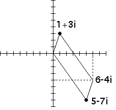

Complex numbers can be represented geometrically as points in the plane, taking the real part for the x-coordinate and the imaginary part for the y-coordinate.
1. Thinking of complex numbers as vectors in the plane, we see addition of complex numbers is just the familiar parallelogram law of vector addition.
|  |
2. At least from this point of view, multiplication does not have such a clear visualization.
The polar representation will reveal a simple interpretation.
3. The modulus sqrt(a2 + b2) of the complex
number
Here are a few geometric problems in the sample.
Return to Background.